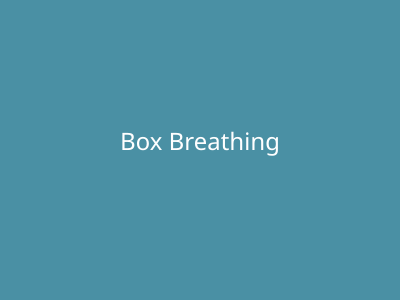

Respiration carrée

La respiration carrée, ou respiration en boîte, est une technique simple et puissante pour apaiser le système nerveux, réduire le stress et améliorer la concentration. Elle consiste à inspirer, retenir, expirer et retenir à nouveau, chaque phase sur le même nombre de temps.
Instructions :
- Installez-vous confortablement, assis ou allongé.
- Fermez les yeux si cela vous aide à vous concentrer.
- Inspirez lentement et profondément par le nez sur 4 temps. Sentez votre ventre se gonfler.
- Retenez votre souffle sur 4 temps.
- Expirez lentement et complètement par la bouche sur 4 temps.
- Retenez à nouveau votre souffle sur 4 temps.
- Répétez pendant plusieurs minutes.
Conseils :
- Gardez un rythme régulier tout au long de l'exercice.
- Si 4 temps est difficile, réduisez à 2 ou 3.
- Concentrez-vous sur la sensation du souffle.
Précautions :
- En cas de vertige, arrêtez et reprenez une respiration normale.
- Consultez un médecin en cas de problèmes de santé.
Retour aux exercices